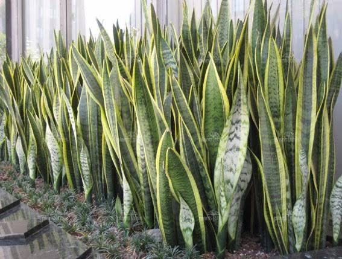

Tabuleiro
Espada-de-São-Jorge
Dracaena trifasciata
A espada de são jorge ajuda a filtrar algumas toxinas comuns em nossas casas como o formaldeído, o tricloroetileno, o xileno, o tolueno e o benzeno do ar.
Sendo indicada para pessoas com problemas respiratórios, ajudando a prevenir dores de cabeça, irritações nos olhos e melhorando o sono de todos.
Um curiosidade é que ela é super fácil de cuidar, ela vive praticamente com qualquer luz e costuma necessitar de rega a cada 15 dias apenas.
Muito legal essa curiosidade dessa lição.